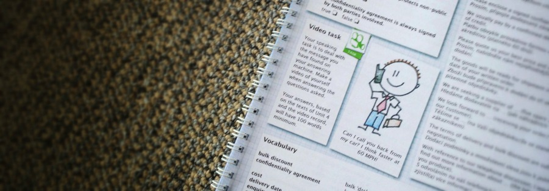

Služby školám, učitelům a lektorům cizích jazyků
- odborná angličtina, němčina a ruština pro budoucí odborníky dle skupin oborů středních škol
- online kurzy a metodické kurzy pro lektory, učitele cizích jazyků a odborných předmětů
- vzdělávací moduly obsahující vždy deset lekcí ke zvládnutí odborné terminologie
- interaktivní výukové materiály pro studenty vytvořené podle potřeb podniků
- tvorba a výroba výukových materiálů pro specifické obory na zakázku

Naše vzdělávací moduly jsou v souladu s rámcovými vzdělávacími programy MŠMT ČR a prokazatelně zvyšují kvalitu výuky odborných cizích jazyků i vzdělávací výsledky žáků. OPEN LEARNING je svým interaktivním přístupem zábavnější než klasické studium. Moduly lze využít jako doplněk výuky cizího jazyka.
Nabízíme poskytování našich výukových materiálů žákům středních škol, studentům vysokých škol a možnost vytvoření specifických výukových materiálů přímo na zakázku.
Pro získání certifikátu musí lektor nebo učitel úspěšně absolvovat online kurz a metodický kurz.
Aktuálně nabízíme tyto online kurzy pro učitele obsahující vždy 10 lekcí:
Tyto vzdělávací programy jsou zpracovány specialisty na výuky cizích jazyků, rodilými mluvčími a odborníky z praxe - především z nadnárodních společností (více v sekci O nás).
Metodické kurzy se konají v termínech a místech dle domluvy. Kurzy jsou jednodenní, jejich součástí je metodika kontaktní výuky a metodika online výuky v prostředí OPEN LEARNING.
Nahlédněte přímo na obsah programů nebo si objednejte prezentaci přímo u vás.
Aktuální ceny najdete zde.
Nabízíme poskytování našich výukových materiálů žákům středních škol, studentům vysokých škol a možnost vytvoření specifických výukových materiálů přímo na zakázku.
Certifikace lektorů a učitelů
Pro získání certifikátu musí lektor nebo učitel úspěšně absolvovat online kurz a metodický kurz.
Online kurzy pro učitele, lektory a žáky
Aktuálně nabízíme tyto online kurzy pro učitele obsahující vždy 10 lekcí:
- Angličtina pro chemiky pro obor 28 – Technická chemie a chemie silikátů
- Angličtina pro strojaře pro obor 23 – Strojírenství a strojírenská výroba
- Angličtina pro obchodníky pro obory 63 – Ekonomika a administrativa, 66 – Obchod, 23 – Strojírenství a strojírenská výroba
- Angličtina pro cestovní ruch pro obory 65 – Gastronomie, hotelnictví, turismus, 63 – Ekonomika a administrativa, 66 – Obchod
- Němčina pro strojaře pro obor 23 – Strojírenství a strojírenská výroba
- Němčina pro obchodníky pro obory 63 – Ekonomika a administrativa, 66 – Obchod, 23 – Strojírenství a strojírenská výroba
- Němčina pro cestovní ruch pro obory 65 – Gastronomie, hotelnictví, turismus, 63 – Ekonomika a administrativa, 66 – Obchod
- Ruština pro obchodníky pro obory 63 – Ekonomika a administrativa, 66 – Obchod, 23 – Strojírenství a strojírenská výroba
Tyto vzdělávací programy jsou zpracovány specialisty na výuky cizích jazyků, rodilými mluvčími a odborníky z praxe - především z nadnárodních společností (více v sekci O nás).
Metodický kurz
Metodické kurzy se konají v termínech a místech dle domluvy. Kurzy jsou jednodenní, jejich součástí je metodika kontaktní výuky a metodika online výuky v prostředí OPEN LEARNING.
Nahlédněte přímo na obsah programů nebo si objednejte prezentaci přímo u vás.
Aktuální ceny najdete zde.
Open Agency